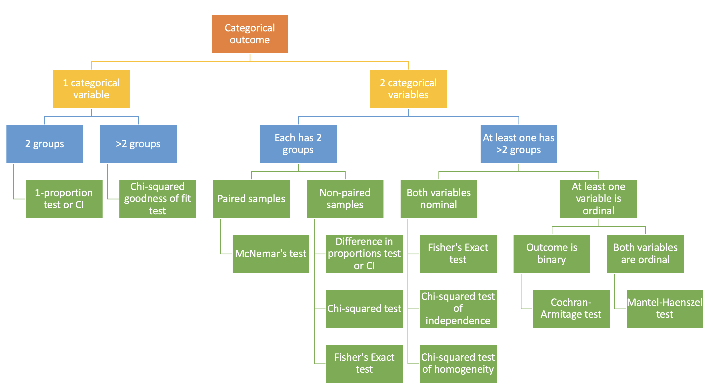

[1] 0.302Lesson 2: Introduction to Categorical Data Analysis
Nicky Wakim
2025-03-31
Learning Objectives
Recognize the motivation for and focus of our course (categorical responses)
Recall features of the Binomial distribution for categorical data analysis and utilize the normal approximation
Estimate a single proportion
Estimate a difference in proportions
Display data from two categorical variables, each with 2 or more categories, using R X C contingency tables
Determine if a nominal response and nominal explanatory variable are associated with one another using the Chi-squared test
Determine if a nominal response and nominal explanatory variable are associated with one another using the Fisher Exact test
Determine if a binary, nominal response and an ordinal explanatory variable are associated with one another using the Cochran-Armitage test
Determine if an ordinal response and ordinal explanatory variable are associated with one another using the Mantel-Haenszel test
Learning Objectives
- Recognize the motivation for and focus of our course (categorical responses)
Recall features of the Binomial distribution for categorical data analysis and utilize the normal approximation
Estimate a single proportion
Estimate a difference in proportions
Display data from two categorical variables, each with 2 or more categories, using R X C contingency tables
Determine if a nominal response and nominal explanatory variable are associated with one another using the Chi-squared test
Determine if a nominal response and nominal explanatory variable are associated with one another using the Fisher Exact test
Determine if a binary, nominal response and an ordinal explanatory variable are associated with one another using the Cochran-Armitage test
Determine if an ordinal response and ordinal explanatory variable are associated with one another using the Mantel-Haenszel test
What is Categorical Data Analysis?
In BSTA 512/612 (linear regression), we focused on continuous responses/outcomes
We included categorical variables only as covariates (aka predictors, independent variables, explanatory variables)
Examples from 512/612: life expectancy (in years), IAT score (ranging from -2 to 2)
Categorical data analysis focuses on the statistical methods for categorical responses/outcomes
- Explanatory (or ‘independent’) variable can be of any type (continuous or categorical)
Types of Variables

Types of Variables: Outcomes we will cover in this course

What does this course cover?
Strategies for assessing association between categorical response variable and a one explanatory variable
- Hypothesis testing
- Measure of association
- Simple logistic regression
Statistical modeling strategies for assessing association between the categorical response variable and a set of explanatory variables
Logistic regression
- For binary, ordinal, and multinomial outcomes
Poisson regression
- For counts outcomes
Poll everywhere question 1
Learning Objectives
- Recognize the motivation for and focus of our course (categorical responses)
- Recall features of the Binomial distribution for categorical data analysis and utilize the normal approximation
Estimate a single proportion
Estimate a difference in proportions
Display data from two categorical variables, each with 2 or more categories, using R X C contingency tables
Determine if a nominal response and nominal explanatory variable are associated with one another using the Chi-squared test
Determine if a nominal response and nominal explanatory variable are associated with one another using the Fisher Exact test
Determine if a binary, nominal response and an ordinal explanatory variable are associated with one another using the Cochran-Armitage test
Determine if an ordinal response and ordinal explanatory variable are associated with one another using the Mantel-Haenszel test
Binomial Distribution
Consider a sample of \(n\) independent trials, each of which can have only two possible outcomes (“success” and “failure”)
For each trial: \[\begin{align} P( \text{success}) & = p \\ P( \text{failure}) & = 1- p = q \end{align}\]
Binomial distribution: distribution of the number of successes in n independent trials
The probability mass function for the binomial distribution is: \[P(X=k) = {n \choose k} p^k q^{n-k}, \text{ for } k = 0, 1, ..., n\]
- \(E(X) = np\)
- \(Var(X) = npq = np(1-p)\)
Binomial Distribution
Consider a sample of \(n\) independent trials, each of which can have only two possible outcomes (“success” and “failure”)
For each trial: \[\begin{align} P( \text{success}) & = p \\ P( \text{failure}) & = 1- p = q \end{align}\]
Binomial distribution: distribution of the number of successes in n independent trials
The probability mass function for the binomial distribution is: \[P(X=k) = {n \choose k} p^k q^{n-k}, \text{ for } k = 0, 1, ..., n\]
- \(E(X) = np\)
- \(Var(X) = npq = np(1-p)\)

Binomial Distribution: R commands
R commands with their input and output:
| R code | What does it return? |
|---|---|
rbinom() |
returns sample of random variables with specified binomial distribution |
dbinom() |
returns probability of getting certain number of successes |
pbinom() |
returns cumulative probability of getting certain number or less successes |
qbinom() |
returns number of successes corresponding to desired quantile |
Binomial Distribution Example
Example
If the probability that one white blood cell is a lymphocyte is 0.2, compute the probability of 2 lymphocytes out of 10 white blood cells
\[P(X=2) = {10 \choose 2} 0.2^2 (1-0.2)^{10-2} = 0.3020\]
Normal Approximation of the Binomial Distribution
Also known as: Sampling distribution of \(\widehat{p}\)
IF \(X\sim \text{Binomial}(n,p)\) and \(np>10\) and \(nq = n(1-p) > 10\)
- Ensures sample size (\(n\)) is moderately large and the \(p\) is not too close to 0 or 1
- Other resources use other criteria (like \(npq>5\) or \(np>5\))
- When looking at a sample, we use \(\widehat{p}\) instead of \(p\) to check this!!
THEN approximately \(𝑋\sim \text{Normal}\big(\mu_X = np, \sigma_X = \sqrt{np(1-p)} \big)\)
- Or we often write this as the sampling distribution of \(\widehat{p}\): \[\widehat{p} \sim \text{Normal}\bigg(\mu_{\widehat{p}} = p, \sigma_{\widehat{p}} = \sqrt{\dfrac{p(1-p)}{n}}\bigg)\]
Pretty good video behind the intuition of this (Watch 00:00 - 05:40)
Different tests of association
Learning Objectives
Recognize the motivation for and focus of our course (categorical responses)
Recall features of the Binomial distribution for categorical data analysis and utilize the normal approximation
- Estimate a single proportion
Estimate a difference in proportions
Display data from two categorical variables, each with 2 or more categories, using R X C contingency tables
Determine if a nominal response and nominal explanatory variable are associated with one another using the Chi-squared test
Determine if a nominal response and nominal explanatory variable are associated with one another using the Fisher Exact test
Determine if a binary, nominal response and an ordinal explanatory variable are associated with one another using the Cochran-Armitage test
Determine if an ordinal response and ordinal explanatory variable are associated with one another using the Mantel-Haenszel test
Estimate and Confidence Interval of Single Proportion
- Estimate of proportion:
\[ \widehat{p} = \dfrac{\# \text{successes}}{\# \text{successes} + \# \text{failures}} \]
Use the sampling distribution of \(\widehat{p}\) to construct the confidence interval:
- \((1-\alpha)\%\) confidence interval for estimate proportion:
\[\begin{align} \widehat{p} &\pm z^*_{(1-\alpha/2)} \cdot SE_{\hat{p}} \\ \widehat{p} &\pm z^*_{(1-\alpha/2)} \cdot \sqrt{\frac{\hat{p}(1-\hat{p})}{n}} \end{align}\]
- Using \(SE_{\hat{p}} = \sqrt{\frac{\hat{p}(1-\hat{p})}{n}}\) - instead of \(\sigma_{p} = \sqrt{\frac{p(1-p)}{n}}\) - because we don’t know exactly what \(p\) is
Smoking status example
A cross-sectional study of 8681 patients was conducted to evaluate the nature of smoking status among people. Of the 8681 people, 4840 were nonsmokers and 3841 were smokers.
Needed steps:
- Estimate proportion \(\widehat{p}\)
- Check that \(n\widehat{p}>10\) and \(n(1-\widehat{p})>10\) in order to make normal approximation
- Construct 95% confidence interval
- Write interpretation
Smoking status example
A cross-sectional study of 8681 patients was conducted to evaluate the nature of smoking status among people. Of the 8681 people, 4840 were nonsmokers and 3841 were smokers.
- Estimate proportion \(\widehat{p}\) \[ \widehat{p} = \dfrac{3841}{3841 + 4840} = \dfrac{3841}{8681} = 0.44246\]
- Check that \(n\widehat{p}>10\) and \(n(1-\widehat{p})>10\) in order to make normal approximation \[ n\widehat{p} = 8681\cdot0.4425 = 3841 > 10\] \[ n(1-\widehat{p}) = 8681\cdot(1-0.4425) = 4840 > 10\]
- Construct 95% confidence interval
\[ \widehat{p} \pm z^*_{0.975} \cdot \sqrt{\frac{\hat{p}(1-\hat{p})}{n}}\]
1-sample proportions test with continuity correction
data: 3841 out of 8681, null probability 0.5
X-squared = 114.73, df = 1, p-value < 2.2e-16
alternative hypothesis: true p is not equal to 0.5
95 percent confidence interval:
0.4319827 0.4529896
sample estimates:
p
0.4424605 - Write interpretation of estimate
The estimated proportion of smokers is 0.442 (95% CI: 0.432, 0.453).
Additional interpretation of CI: We are 95% confident that the (population) proportion of smokers is between 0.432 and 0.453.
Poll everywhere question 2
Learning Objectives
Recognize the motivation for and focus of our course (categorical responses)
Recall features of the Binomial distribution for categorical data analysis and utilize the normal approximation
Estimate a single proportion
- Estimate a difference in proportions
Display data from two categorical variables, each with 2 or more categories, using R X C contingency tables
Determine if a nominal response and nominal explanatory variable are associated with one another using the Chi-squared test
Determine if a nominal response and nominal explanatory variable are associated with one another using the Fisher Exact test
Determine if a binary, nominal response and an ordinal explanatory variable are associated with one another using the Cochran-Armitage test
Determine if an ordinal response and ordinal explanatory variable are associated with one another using the Mantel-Haenszel test
Estimate and Confidence Interval for Difference in Proportions
Use the sampling distribution of \(\widehat{p}_1\) and \(\widehat{p}_2\) to construct the confidence interval:
- \((1-\alpha)\%\) confidence interval for estimate difference in proportions:
\[\begin{align} \widehat{p}_1 - \widehat{p}_2 &\pm z^*_{(1-\alpha/2)} \cdot SE_{\hat{p}_1 - \hat{p}_2} \\ \widehat{p}_1 - \widehat{p}_2 &\pm z^*_{(1-\alpha/2)} \cdot \sqrt{ \frac{\hat{p}_1\cdot(1-\hat{p}_1)}{n_1} + \frac{\hat{p}_2\cdot(1-\hat{p}_2)}{n_2}} \end{align}\]
- Using \(SE_{\hat{p}_1 - \hat{p}_2} = \sqrt{\frac{\hat{p}_1\cdot(1-\hat{p}_1)}{n_1} + \frac{\hat{p}_2\cdot(1-\hat{p}_2)}{n_2}}\) because we don’t know exactly what \(p_1\) and \(p_2\) are
Poll Everywhere Question 3
Example: Strong Heart Study (1/2)
The Strong Heart Study is an ongoing study of American Indians residing in 13 tribal communities in three geographic areas (AZ, OK, and SD/ND) to study prevalence and incidence of cardiovascular disease and to identify risk factors. We will be examining the 4-year cumulative incidence of diabetes with one risk factor, glucose tolerance.
Impaired glucose: normal or impaired glucose tolerance at baseline visit (between 1988 and 1991)
Diabetes: Indicator of diabetes at follow-up visit (roughly four years after baseline) according to two-hour oral glucose tolerance test

Example: Strong Heart Study (2/2)
There is a total of 1664 American Indians in the dataset, with the following distribution of folks with diabetes and glucose tolerance:
Displaying the contingency table in R
| Glucose |
Diabetes
|
Total | |
|---|---|---|---|
| Not diabetic | Diabetic | ||
| Impaired | 334 | 198 | 532 |
| Normal | 1004 | 128 | 1132 |
| Total | 1338 | 326 | 1664 |
Strong Heart Study
What is the difference in proportions for American Indians that have diabetes comparing individuals with normal vs. impaired glucose?
Needed steps:
- Estimate the difference in proportions
- Check that each cell has at least 10 individuals
- Construct 95% confidence interval
- Write interpretation of estimate
Strong Heart Study
What is the difference in proportions for American Indians that have diabetes comparing individuals with normal vs. impaired glucose?
| Glucose |
Diabetes
|
Total | |
|---|---|---|---|
| Not diabetic | Diabetic | ||
| Impaired | 334 | 198 | 532 |
| Normal | 1004 | 128 | 1132 |
| Total | 1338 | 326 | 1664 |
Estimate the difference in proportions \[ \widehat{p}_1 -\widehat{p}_2 = \dfrac{198}{532} - \dfrac{128}{1132} = 0.2591\]
Check that each cell has at least 10 individuals
- Construct 95% confidence interval
2-sample test for equality of proportions with continuity correction
data: table(SHS$Glucose, SHS$Diabetes)
X-squared = 152.6, df = 1, p-value < 2.2e-16
alternative hypothesis: two.sided
95 percent confidence interval:
0.2126963 0.3055162
sample estimates:
prop 1 prop 2
0.3721805 0.1130742 - Write interpretation of estimate
The estimated difference in proportion of diabetic American Indians comparing is 0.259 (95% CI: 0.213, 0.306).
Additional interpretation of CI: We are 95% confident that the difference in (population) proportions of American Indians who have normal glucose tolerance and impaired glucose tolerance that developed diabetes is between 0.213 and 0.306.
McNemar’s Test
- McNemar’s test should be used if data is from a matched pairs study
What is a matched-pairs study?
- Participants are paired based on key characteristics
- Each participant within a pair will be assigned to different treatment groups
Categorical test that is parallel to the “paired t-test”
R packages and functions
- Normal approximation:
mcnemar.test()in built-instatspackage - Exact test:
mcnemar.exact()inexact2x2package
- Normal approximation:
- If you would like more information of McNemar’s test, please see Rosner TB: 10.4 and 10.5: Paired Samples
Summary so far
- Introduced categorical data as the response in analysis
- Reviewed an important distribution (Binomial distribution) for categorical data analysis
- Estimated a single proportion from a sample with its confidence interval
- Estimated a difference in proportions from a sample with its confidence interval
Can we expand this to ask a more general question about association between a response and explanatory variable?
- What if there is more than 2 categories for either variable?
Learning Objectives
Recognize the motivation for and focus of our course (categorical responses)
Recall features of the Binomial distribution for categorical data analysis and utilize the normal approximation
Estimate a single proportion
Estimate a difference in proportions
- Display data from two categorical variables, each with 2 or more categories, using R X C contingency tables
Determine if a nominal response and nominal explanatory variable are associated with one another using the Chi-squared test
Determine if a nominal response and nominal explanatory variable are associated with one another using the Fisher Exact test
Determine if a binary, nominal response and an ordinal explanatory variable are associated with one another using the Cochran-Armitage test
Determine if an ordinal response and ordinal explanatory variable are associated with one another using the Mantel-Haenszel test
Contingency Tables (R x C)
R X C contingency tables
Contains information for two discrete variables: one has R categories and the other has C categories.
Refers to the number of rows (R) and number of columns (C) in the table
For two proportions: focused on 2 X 2 contingency tables
- R = 2, C = 2
Expand our contingency tables to variables with 2 or more categories
- Categories can be ordinal or nominal
Contingency Table: Example
Let’s say we are interested in learning the association between the development of breast cancer and age at first birth. Our first step is typically to present the observed data:

- This is a 2 x 5 contingency table
Test Association/Trend of R X C Contingency Table
If both variables are nominal, a test of general association will be sufficient
Test of general association is the same regardless of R and C
Test used for 2x2 contingency table same as 5x3 contingency table
We will cover:
- Chi-squared test
- Fisher Exact test
If one or both variables are ordinal, a test of trend may be of interest
Treats ordinal variables as quantitative rather than qualitative (nominal scale)
Test of trend has greater power than the test of general association
We will cover:
- Cochran-Armitage test
- Mantel-Haenszel test
Poll Everywhere Question 4
Test of General Association
- General research question: Are two variables (both categorical, nominal) associated with each other?
Translated to a hypothesis test:
- \(H_0\) : There is no association between the two variables / The variables are independent
- \(H_1\) : There is an association between the two variables / The variables are not independent
We have two options for testing general association:
- Chi-squared test
- Fisher’s Exact test
Test of General Association: SHS Example
Main question: Do American Indians with impaired glucose tolerance have a different incidence of diabetes?
- Is glucose tolerance associated with diabetes incidence among American Indians?
We have two variables, and both variables have two nominal categories
- Diabetes outcome: Not diabetic and Diabetic
- Glucose tolerance: Normal or Impaired
Answer research question with a test of general association
Hypothesis:
- \(H_0\) : There is no association between glucose tolerance and diabetes / Glucose tolerance and diabetes are independent
- \(H_1\) : There is an association between glucose tolerance and diabetes / Glucose tolerance and diabetes are not independent
Learning Objectives
Recognize the motivation for and focus of our course (categorical responses)
Recall features of the Binomial distribution for categorical data analysis and utilize the normal approximation
Estimate a single proportion
Estimate a difference in proportions
Display data from two categorical variables, each with 2 or more categories, using R X C contingency tables
- Determine if a nominal response and nominal explanatory variable are associated with one another using the Chi-squared test
Determine if a nominal response and nominal explanatory variable are associated with one another using the Fisher Exact test
Determine if a binary, nominal response and an ordinal explanatory variable are associated with one another using the Cochran-Armitage test
Determine if an ordinal response and ordinal explanatory variable are associated with one another using the Mantel-Haenszel test
Chi-squared test
- Test to see how likely is it that we observe our data given the null hypothesis (no association)
- We use the null to calculate the expected cell counts and compare them to the observed cell counts
Requirements to conduct Chi-squared test (expected cell counts)
For 2 x 2 contingency table:
- No expected cell counts should be less than 10
For contingency table with 3x2, 3x3, 4x4, etc.:
- No more than 20% of expected cell counts are less than 5
- No expected cell counts are less than 1
Chi-squared test: Process
Check that the expected cell counts threshold is met
Set the level of significance \(\alpha\)
Specify the null ( \(H_0\) ) and alternative ( \(H_A\) ) hypotheses
- In symbols
- In words
- Alternative: one- or two-sided?
Calculate the test statistic and p-value for Chi-squared test in R
- We will not discuss the test statistic’s equation
Write a conclusion to the hypothesis test
- Do we reject or fail to reject \(H_0\)?
- Write a conclusion in the context of the problem
Chi-squared test: Expected Cell Counts
- Is the sample size big enough for the chi-square test to be adequate? What are the expected cell counts?
- If you want an explanation of how to calculate by hand, please see Vu and Harringtion TB (section 8.3.1, page 405)
- Too time consuming for this class, but R does it quickly using the
expected()function in theepitoolspackage
Chi-squared test: Expected Cell Counts
- In the Strong Heart Study…
Diabetic Not diabetic
Impaired 198 334
Normal 128 1004
Diabetic Not diabetic
Impaired 104.226 427.774
Normal 221.774 910.226
All expected counts > 5
Chi-squared test: SHS Example
- Check expected cell counts threshold
All expected cells are greater than 5.
\(\alpha = 0.05\)
Hypothesis test:
- \(H_0\) : There is no association between glucose tolerance and diabetes
- \(H_1\) : There is an association between glucose tolerance and diabetes
- Calculate the test statistic and p-value for Chi-squared test in R
Pearson's Chi-squared test with Yates' continuity correction
data: SHS_table
X-squared = 152.6, df = 1, p-value < 2.2e-16- Conclusion to the hypothesis test
We reject the null hypothesis that glucose tolerance and diabetes are not associated (\(p<2.2\cdot10^{-16}\)). There is sufficient evidence that glucose tolerance and diabetes incidence are associated among American Indians.
Learning Objectives
Recognize the motivation for and focus of our course (categorical responses)
Recall features of the Binomial distribution for categorical data analysis and utilize the normal approximation
Estimate a single proportion
Estimate a difference in proportions
Display data from two categorical variables, each with 2 or more categories, using R X C contingency tables
Determine if a nominal response and nominal explanatory variable are associated with one another using the Chi-squared test
- Determine if a nominal response and nominal explanatory variable are associated with one another using the Fisher Exact test
Determine if a binary, nominal response and an ordinal explanatory variable are associated with one another using the Cochran-Armitage test
Determine if an ordinal response and ordinal explanatory variable are associated with one another using the Mantel-Haenszel test
Fisher’s Exact Test
- Only necessary when expected counts in one or more cells is less than 5
- Given row and column totals fixed, computes exact probability that we observe our data or more extreme data
- Consider a general 2 x 2 table:

- The exact probability of observing a table with cells (a, b, c, d) can be computed based on the hypergeometric distribution
\[P(a, b, c, d) = \dfrac{(a+b)!\cdot(c+d)!\cdot(a+c)!\cdot(b+d)!}{n!\cdot a!\cdot b!\cdot c!\cdot d!}\]
- Numerator is fixed and denominator changes
Fisher’s Exact test: Process
Check the expected cell counts
Set the level of significance \(\alpha\)
Specify the null ( \(H_0\) ) and alternative ( \(H_A\) ) hypotheses
- In symbols
- In words
- Alternative: one- or two-sided?
Calculate the test statistic and p-value for Fisher Exact test in R
- We will not discuss the test statistic’s equation
Write a conclusion to the hypothesis test
- Do we reject or fail to reject \(H_0\)?
- Write a conclusion in the context of the problem
Fisher’s Exact test: Postop neuropathy in gender affirming care (1/2)
- Study on new postoperative neuropathy after receiving gender affirming care (Study link)
- Postop neuropathy = nerve damage following surgery
- Study comprised of 232 trans men and trans women receiving their respective hormone therapies
- They measured different aspects of the surgery to see if there was an association with development of postop neuropathy
- Goal in this example: see if estimated blood loss, greater than or less than 250 ml, is associated with postop neuropathy
| EBL > 250ml |
Postoperative Neuropathy
|
Total | |
|---|---|---|---|
| No | Yes | ||
| No | 145 | 4 | 149 |
| Yes | 78 | 5 | 83 |
| Total | 223 | 9 | 232 |
Fisher’s Exact test: Postop neuropathy in gender affirming care (2/2)
- Check expected cell counts threshold
One cell has an expected count less than 5
\(\alpha = 0.05\)
Hypothesis test:
- \(H_0\) : There is no association between glucose tolerance and diabetes
- \(H_1\) : There is an association between glucose tolerance and diabetes
- Calculate the test statistic and p-value for Fisher Exact test
Fisher's Exact Test for Count Data
data: GAC_table
p-value = 0.2877
alternative hypothesis: true odds ratio is not equal to 1
95 percent confidence interval:
0.4829292 12.0164676
sample estimates:
odds ratio
2.314727 - Conclusion to the hypothesis test
We fail to reject the null hypothesis that estimated blood loss and postop neuropathy are not associated (\(p=0.29\)). There is insufficient evidence that estimated blood loss and postop neuropathy are associated.
Learning Objectives
Recognize the motivation for and focus of our course (categorical responses)
Recall features of the Binomial distribution for categorical data analysis and utilize the normal approximation
Estimate a single proportion
Estimate a difference in proportions
Display data from two categorical variables, each with 2 or more categories, using R X C contingency tables
Determine if a nominal response and nominal explanatory variable are associated with one another using the Chi-squared test
Determine if a nominal response and nominal explanatory variable are associated with one another using the Fisher Exact test
- Determine if a binary, nominal response and an ordinal explanatory variable are associated with one another using the Cochran-Armitage test
- Determine if an ordinal response and ordinal explanatory variable are associated with one another using the Mantel-Haenszel test
Test of Trend
If one or both variables are ordinal, a test of trend may be of interest
- Treats ordinal variables as quantitative rather than qualitative (nominal scale)
- Test of trend has greater power than the test of general association
- You can use a test of general association for non-ordinal variables
Two tests of trend that we we learn:
Cochran-Armitage test
- Tests association between a binary response and an ordinal explanatory variable
Mantel-Haenszel test
- Test association between an ordinal response and an ordinal explanatory variable
Cochran-Armitage test
- Cochran-Armitage test for trend will determine if there is association between a binary response variable and an ordinal variable with 3 or more categories
It will test the trend of the proportions over the ordinal variable
- Answers the question: Does the proportion of people with a “successful” outcome increase as the ordinal explanatory variable increases?
- Cochran-Armitage test for trend is only suitable for 2 x C contingency tables
Cochran-Armitage test: Hypothesis Test
Null Hypothesis (\(H_0\))
The proportions of successes are the same across all C ordinal values of the explanatory variable. \[p_1 = p_2 = ... = p_C\]
Alternative Hypothesis (\(H_1\))
The proportions of successes tend to increase as ordinal value of the explanatory variable increases
\[p_1 \leq p_2 \leq ... \leq p_C\]
OR
The proportions of successes tend to decrease as ordinal value of the explanatory variable increases
\[p_1 \geq p_2 \geq ... \geq p_C\]
Cochran-Armitage test: Process
Set the level of significance \(\alpha\)
Specify the null ( \(H_0\) ) and alternative ( \(H_A\) ) hypotheses
- In symbols
- In words
- Alternative: one- or two-sided?
Calculate the test statistic and p-value for Cochran-Armitage test in R
- We will not discuss the test statistic’s equation
- Just know it follows a Normal distribution
Write a conclusion to the hypothesis test
- Do we reject or fail to reject \(H_0\)?
- Write a conclusion in the context of the problem
Cochran-Armitage test: Example (1/3)
We are interested in learning the association between the development of breast cancer and age at first birth among people who have given birth

Cochran-Armitage test: Example (2/3)
- Before we go into the hypothesis test procedure, we need to construct the contingency table in R
Cancer = c(320, 1206, 1011, 463, 220)
No_Cancer = c(1422, 4432, 2893, 1092, 406)
bscancer = matrix (c(Cancer, No_Cancer), nrow = 2, byrow = T)
rownames(bscancer) = c("Cancer","No Cancer")
colnames(bscancer) = c("<20","20-24","25-29","30-34",">=35")
bscancer <20 20-24 25-29 30-34 >=35
Cancer 320 1206 1011 463 220
No Cancer 1422 4432 2893 1092 406- It does not need to be pretty to use in function
Cochran-Armitage test: Example (3/3)
\(\alpha = 0.05\)
Hypothesis test:
- \(H_0\): The proportions of breast cancer are the same for all age levels of first birth. \[p_1 = p_2 = ... = p_5\]
- \(H_1\): The proportions of breast cancer tends to increase as level of age of first birth increases
\[p_1 \leq p_2 \leq ... \leq p_5\]
- Calculate the test statistic and p-value for Cochran-Armitage test in R
Cochran-Armitage test for trend
data: bscancer
Z = 11.358, dim = 5, p-value < 2.2e-16
alternative hypothesis: two.sided- Conclusion to the hypothesis test
We reject the null hypothesis that proportions of breast cancer are the same for all age levels of first birth (\(p<2.2\cdot10^{-16}\)). There is sufficient evidence that the proportion of of breast cancer increase as the the age at first birth increases.
Learning Objectives
Recognize the motivation for and focus of our course (categorical responses)
Recall features of the Binomial distribution for categorical data analysis and utilize the normal approximation
Estimate a single proportion
Estimate a difference in proportions
Display data from two categorical variables, each with 2 or more categories, using R X C contingency tables
Determine if a nominal response and nominal explanatory variable are associated with one another using the Chi-squared test
Determine if a nominal response and nominal explanatory variable are associated with one another using the Fisher Exact test
Determine if a binary, nominal response and an ordinal explanatory variable are associated with one another using the Cochran-Armitage test
- Determine if an ordinal response and ordinal explanatory variable are associated with one another using the Mantel-Haenszel test
Mantel-Haenszel test
When both variables are ordinal, we can conduct Mantel-Haenszel test of trend for linear association
Mantel-Haenszel test for linear trend is suitable for any R x C contingency tables with two ordinal variables
Hypothesis test:
Null Hypothesis (\(H_0\))
There is no correlation between the two variables \[ \rho = 0\]
Alternative Hypothesis (\(H_1\))
There is correlation between the two variables
\[ \rho \neq 0\]
Mantel-Haenszel test: Process
Set the level of significance \(\alpha\)
Specify the null ( \(H_0\) ) and alternative ( \(H_A\) ) hypotheses
- In symbols
- In words
- Alternative: one- or two-sided?
Calculate the test statistic and p-value for Mantel-Haenszel test in R
- We will not discuss the test statistic’s equation
Write a conclusion to the hypothesis test
- Do we reject or fail to reject \(H_0\)?
- Write a conclusion in the context of the problem
Mantel-Haenszel test: Example (1/3)
A water treatment company is studying water additives and investigating how they affect clothes washing (through measurements of abrasions, wearing, and color loss).
The treatments studies where no treatment (plain water), the standard treatment, and a double dose of the standard treatment, called super. Washability was measured as low, medium and high.
Are levels of washability associated with treatment?

Mantel-Haenszel test: Example (2/3)
- Before we go into the hypothesis test procedure, we need to construct the contingency table in R
water = matrix (c(27, 14, 5, 10, 17, 26, 5, 12, 50), nrow = 3, byrow = T)
rownames(water) = c("plain","standard","super")
colnames(water) = c("low","medium","high")
water low medium high
plain 27 14 5
standard 10 17 26
super 5 12 50- It does not need to be pretty to use in function
Mantel-Haenszel test: Example (3/3)
\(\alpha = 0.05\)
Hypothesis test:
- \(H_0\): Water treatment and washability are not correlated. \[ \rho = 0\]
- \(H_1\): Water treatment and washability are correlated.
\[ \rho \neq 0\]
- Calculate the test statistic and p-value for Mantel-Haenszel test in R
Mantel-Haenszel Chi-Square
data: water
X-squared = 50.602, df = 1, p-value = 1.132e-12- Conclusion to the hypothesis test
We reject the null hypothesis that there is no correlation between washability and water treatment (\(p = 1.13 \cdot 10^{-12} < 0.05\)). There is sufficient evidence that level of water treatment is associated with washability.
Learning Objectives
Recognize the motivation for and focus of our course (categorical responses)
Recall features of the Binomial distribution for categorical data analysis and utilize the normal approximation
Estimate a single proportion
Estimate a difference in proportions
Display data from two categorical variables, each with 2 or more categories, using R X C contingency tables
Determine if a nominal response and nominal explanatory variable are associated with one another using the Chi-squared test
Determine if a nominal response and nominal explanatory variable are associated with one another using the Fisher Exact test
Determine if a binary, nominal response and an ordinal explanatory variable are associated with one another using the Cochran-Armitage test
Determine if an ordinal response and ordinal explanatory variable are associated with one another using the Mantel-Haenszel test
More resources
Review from my EPI 525 class in F25
- Schedule from class: Lessons 15, 16, 19
For a refresher or review of one proportion and differences in proportions
And their power calculations
From Meike’s BSTA 511 course (see Day 12!)
For a refresher or review of Chi-squared test or Fisher’s Exact test
- From Meike’s BSTA 511 course (see Day 13!)
Lesson 2: Introduction to Categorical Data Analysis